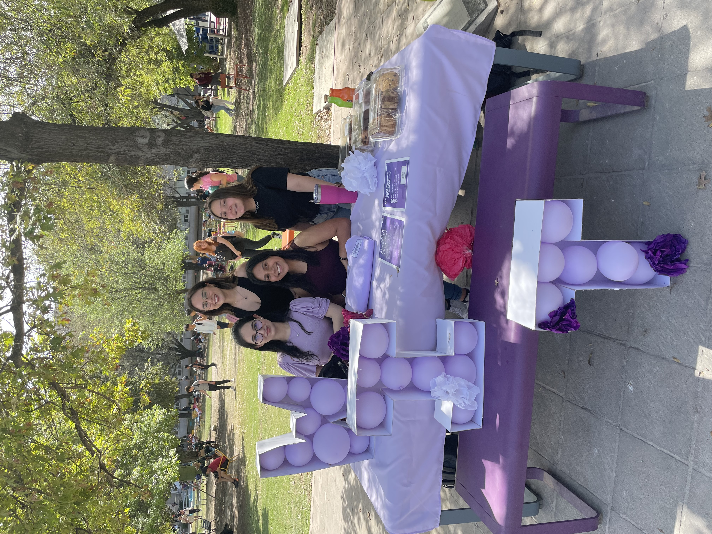

¿Women in Tech?
Women in Technology es un grupo estudiantil del Tecnológico de Monterrey enfocado a fortalecer el avance de las mujeres en el campo de las tecnologías a través de la organización de actividades grupales que faciliten el desarrollo de habilidades técnicas y blandas en la comunidad de estudiantes.